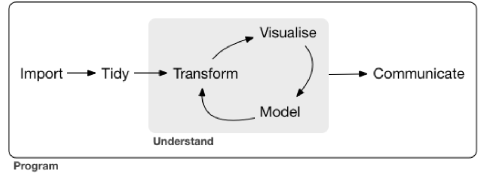
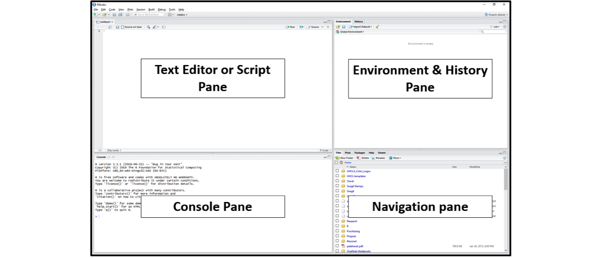
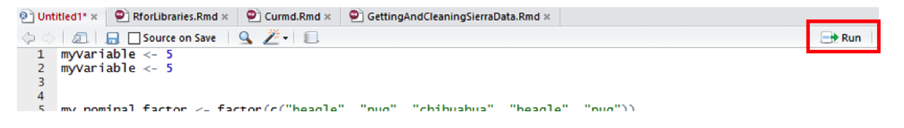
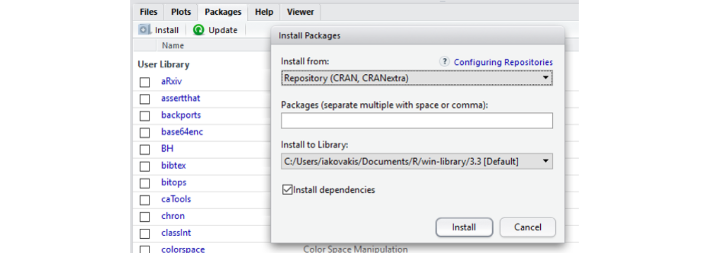

Introduction to R
Clarke Iakovakis
Introduction
This guide accompanies the first day of instruction for our course at the 2020 FORCE11 Scholarly Communications Institute: “W24 - Working with Scholarly Literature in R: Pulling, Wrangling, Cleaning, and Analyzing Structured Bibliographic Metadata.”. It covers the essentials of what R is.
This walkthrough is distributed under a Creative Commons Attribution 4.0 International (CC BY 4.0) License.

About me
The guide was originally created by Clarke Iakovakis in 2018 for an ALCTS webinar, and updated in 2019 for a course at the Texas Conference on Digital Libraries, then again at the 2019 FSCI, and finally for the 2020 FSCI. I am the Scholarly Services Librarian at the Oklahoma State University Library. I began using R in 2013 out of curiosity. The only background in computer programming I had at the time was a class in high school on Visual Basic, and a sparse knowledge of XML, HTML and CSS picked up in library school. My bachelor’s degree is in history. My level of data literacy was relatively low as well–for instance, I did not really know what CSV files were or how to work with them. In other words, my background is in the humanities–not math, not science, not statistics, not computer science, not computer programming. You do not have to be a statistician or programmer to learn and use R!
I first enrolled in an R course created by Lynda.com, which provided an excellent basic foundation. I then completed several R courses in Coursera, and read a couple of books on R (see the R Resources at the end of this document). I began forcing myself to solve my data problems in R rather than going back to the spreadsheet software I was more comfortable and familiar with. I felt considerable satisfaction after creating solutions to complex problems in R, and I began gaining critical insights into my data that simply were not possible using other platforms. This was enough to offset the frustration and anxiety of using a new tool. It has become a critical part of my work as a librarian, and a week rarely passes without my using it in some way.
Using this guide
Throughout this guide you will see snippets of code, which looks like this:
# A snippet of R code
sum(2, 2)
## [1] 4Where the top line is a comment, the middle line is code, and the third line is output. You can cut and paste code from these snippets into R console at the >. This symbol is not shown in code snippets. Another difference is, if you run sum(2, 2) in your console, you will not see the double hashes ## in the resulting print.
In the text of this document, R functions will appear in code font Lucida Console and will be followed by parentheses: read.csv(). Other R objects, such as data or expressions, will also be in code font but will not have parentheses: y <- 5.
Let’s get started learning R!
About R and RStudio
What is R?
R is more of a programming language than a statistics program. It was started by Robert Gentleman and Ross Ihaka from the University of Auckland in 1995. They described it as “a language for data analysis and graphics.”1 You can use R to create, import, and scrape data from the web; clean and reshape it; visualize it; run statistical analysis and modeling operations on it; text and data mine it; and much more.
Advantages of R
R has a large user base in a variety of fields:
- Multiple academic disciplines: Statistics, Education, Genomics, Earth Sciences, Finance, Linguistics, Literature
- Data science
- Tech industry: Microsoft, Google, Facebook
- Major companies: American Express, Ford, Uber
- Journalism: The New York Times, The Guardian
- Government: National Weather Service, Federal Drug Administration
The user community is large, diverse, and active. Many times I will Google my questions or look them up in Stack Overflow, and copy/paste code directly into my script. the R community is open and supportive, which helps immensely in solving problems with your code.
R is also free and open source, distributed under the terms of the GNU General Public License.. This means it is free to download and use the software for any purpose, modify it, and share it. As a result, R users have created thousands of packages and software to enhance user experience and functionality.
Drawbacks of R
As described in this video by R expert Roger Peng, the objects you manipulate in R are stored in the physical memory of the computer. One drawback to this is, if you are working with really big data, it can bog down your computer. Moreover, if the objects you are working with are bigger than the memory of the computer, you can’t load it into memory or use. In other words, R is not necessarily the best platform for working with big data.
Another potential drawback to R for some people is that you write commands by hand, character-by-character. You have a console window with a blinking cursor, and you type in a command according to the R syntax in order to make it do something. This can be intimidating for people who are used to Graphical User Interface (GUI) software such as Excel, where you use the mouse to point and click, and never or seldom have to type anything into the interface in order to get it to do something. Roger Peng has another video explaining this in more detail. While this can be seen as a drawback, it actually becomes a great advantage once you learn the R language, as you are not bound by the options presented to you in a GUI, but can craft flexible and creative commands.
Downloading R
Go to https://www.r-project.org/. Click on CRAN (Comprehensive R Archive Network) under Download, and scroll down to your country. Select the download link corresponding to the city that is geographically closest to you.
Data Wrangling
By expanding the tools you use to manipulate data, you also open new possibilities for data interpretation, analysis, visualization, and, crucially, communication.
In the model of data analysis presented in Hadley Wickam’s book Data Wrangling with R (licensed under CC BY-NC-ND), data wrangling is the getting, cleaning, and transforming phase, which feeds into the visualization and modeling phases, to be followed by the communicating phase.

“Data wrangling” can be defined as “the ability to take a messy, unrefined source of data and wrangle it into something useful. The art of…extracting raw data and creating clear and actionable bits of information for your analysis.”2 And actionable is really the key word here, we want to be able to take all this raw data and gain insight from it in order to make better decisions and do something with it.
R & Librarianship
It will require some investment of time to learn R syntax, functions, error messages, idiosyncrasies, and limitations. However, it is incredibly powerful and can be a more efficient way to wrangle and clean data than traditional spreadsheet software. You therefore must weigh that investment of time against the expected advantages of adopting R.
If you working with data is an integral part of your job, and you consistently run up against the limitations of spreadsheet software, then the investment may be worthwhile. As you are learning and integrating R into your workflow, you will likely spend significantly more time solving data problems than going back to your laborious and inconvenient, but tried-and-true methods. As explained by Hall & Khan,
adoption [of new technology] is usually an absorbing state, in the sense that we rarely observe a new technology being abandoned in favor of an old one. This is because the decision to adopt faces a large benefit minus cost hurdle; once this hurdle is passed, the costs are sunk and the decision to abandon requires giving up the benefit without regaining the cost.3
It is my contention that for those of us who regularly work with data, the benefits of using R are so clear, there will likely be a crossover point. This is particularly true if you work at a smaller library and do not currently have a collection analysis tool.
The New Tool Scale
For at least the last decade, librarians have been grappling with the ways that the “data deluge” affects our work on multiple levels–collection development, analyzing usage of the library website/space/collections, reference services, information literacy instruction, research support, and more.4 A recent Amigos webinar on the topic of Wrangling Library Data provided a succinct description of the ways that data have become integral to library work:
Whether you work in public, technical or IT services, more data is available to librarians now than ever before. We get circulation data from our ILS and other third-party vendors, demographic information from our communities, bibliographic data from MARC records and other utilities, budget data, survey data, collection data, website analytics, in-house use data, help desk data and more. We now have access to the tools and storage to manipulate these data streams to learn more about our communities, collections, and services. We’re no longer confined to working with data from a single source, but are able to take data from multiple sources, connect them to each other, and discover more about ourselves and our patrons.
By using R or any advanced data analysis platform (such as Python), libraries can harness data in order to:
- Clean messy data from the ILS & vendors
- multiple repeated fields
- clean ISBNs, ISSNs, other identifiers
- detect data errors & anomalies
- normalize names (e.g. databases, ebooks, serials)
- create custom subsets
- Merge data, e.g.
- holdings and usage data from the same vendor
- print book & ebook holdings
- COUNTER statistics
- institutional data
- Recode variables
- Manipulate dates and times
- Create visualizations
- Analyze collections
- Provide data reference services
- Crunch library usage statistics
- Write documents to communicate findings using the R Markdown software (what the present document is written in)
What is RStudio?
RStudio is a user interface for working with R. It is called an Integrated Development Environment (IDE)5 and acts as a sort of wrapper around the R language. You can use R without RStudio, but it’s much more limiting. RStudio makes it easier to import datasets, create and write scripts, and has an autocomplete activated for functions and variables you’ve already assigned. RStudio makes using R much more effective, and is also free and open source.
Downloading RStudio
Go to https://www.rstudio.com/products/RStudio/#Desktop to download the RStudio desktop software.
RStudio panes
After you install and open RStudio, you will see a window with four panes:

Console Pane (bottom left)
If you were just using the basic R interface, without RStudio, this is all you would see. You use this to type in a command and press enter to immediately evaluate it. It includes a > symbol and a blinking cursor prompting you to enter some code. Code that you type directly in the console will not be saved, though it is available in the History Pane. You can try it out by typing 2 + 2 into the console.
Script Pane (top left)
This is sort of like a text editor, or a place to draft and save code. You then tell RStudio to run the line of code, or multiple lines of code, and you can see it appear in the console as it is running. Then save the script as a .R file for future use, or to share with others. To create a new .R script file, use File > New File > R Script, and to open a script, use File > Open, or Recent Files to see files you’ve worked with recently. Save the R script by going to File > Save.
To run code from the script pane, put your cursor on a line of text you want to run, or highlight a block of code, and press Ctrl/Cmd + R or click the Run button in the upper right corner of the pane.

Environment & History Pane (top right)
This pane includes two different but important functions.
Environment: This will display the objects that you’ve read into what is called the “global environment.” When you read a file into R, or manually create an R object, it enters into the computer’s working memory. When we manipulate or run operations on that data, it isn’t actually written to a file until we tell it to. It is kept here in the environment.
The environment pane will also include any objects you have defined. For example, if you type
y <- 5into the console, you will now seeydefined as a value in your environment.You can list all objects in the environment by typing
ls()in the console and pressing Enter on your keyboard. You can clear all objects in the environment by clicking the broom icon to the right of the words “Import Dataset.”" Clear individual objects by using thermfunction; for example:rm(y)will delete theyobject from your environment.
# create object y
y <- 5
# list all objects in the environment
ls()
# remove object y
rm(y)- History: This displays all commands that have been executed in the console. Another easy way to access commands you have typed in previously is to click in the console and press the up arrow on your keyboard.
Customize your RStudio Interface
You can change the pane size, layout, and appearance by going to Tools > Global Options > Appearance/Pane Layout. Also see the RStudio IDE Cheatsheet for a quick reference of the interface and functionality of RStudio.
Quick tips for working in RStudio
- While in the console, press the up and down keys on your keyboard to cycle through previously executed commands
- To execute chunks of code from the Script Pane, highlight the code and press Ctrl/Cmd + R or click the Run button
- Click the broom in the Environment Pane to clear all objects from the workspace
- Press Ctrl/Cmd + L to clear the console, or go to Edit > Clear Console
Getting help with R
To get help on a specific function in R, type help with the function name in parentheses. For example, help(sum) or help(which). This will provide a description of the function, its usage, and the arguments the function takes.
# you can also use ?sum for the same thing.
help(sum)
# get examples of sum in use
example(sum)If you have a coding problem you can’t solve, most likely you are not the first. Someone has likely asked the same question and had it answered somewhere on the web. To be honest, 90% of the time I just Google my question, and typically it points me to one of the following pages:
- Stack Overflow: A website dedicated to asking and answering questions about computer programming
- R-seek: a Google search customized to look only in R related websites
- R-bloggers: A collection of tutorials and walkthroughs written by R users
TRY IT YOURSELF
- Create a new .R file called my_first_script.R
- Write each line of the following code separately in the console pane and identify where the results are found.
2 + 2
sum(2, 2)
sqrt(2)
2 + sqrt(4)
y <- 5
y
y + y
2 * y
print(y)
View(y)
str(y)
plot(y)
class(y)
is.numeric(y)
z <- c(5, 10, 15)
y + z
sum(y, z)
plot(z)
ls()
rm(y)
history()- Type
?suminto the console to pull up the help page for thesum()function. Read the description for this function.
Packages
When you download R it already has a number of functions built in: these encompass what is called Base R. However, many R users write their own libraries of functions, package them together in R Packages, and provide them to the R community at no charge. This extends the capacity of R and allows us to do much more. In many cases, they improve on the Base R functions by making them easier and more straightforward to use.
Installing Packages
The Comprehensive R Archive Network (CRAN) is the main repository for R packages, and that organization maintains strict standards in order for a package to be listed–for example, it must include clear descriptions of the functions, and it must not track or tamper with the user’s R session. See this page from RStudio for a good list of useful R packages. In addition to CRAN, R users can make their code and packages available from GitHub. Finally, some communities host their own collections of R packages, such as Bioconductor for computational biology and bioinformatics.
Installing CRAN packages can be done from the RStudio console. Click the Packages tab in the Navigation Pane, then click Install and search for the package you’re looking for. You can also use the install.packages() function directly in the console. Run help(install.packages) to learn more about how to do it this way.

See instructions for downloading packages for this course on the Setting Up page
tidyverse
The tidyverse includes several useful packages we’ll be using during this course, including dplyr, stringr, and purrr. Tidyverse is actually a package of packages, including many others that you are likely to use as you come to work with R.
# install a package. Sometimes you will have to include the argument dependencies
# = TRUE
install.packages("tidyverse")
# If tidyverse is giving you trouble, just install these packages one by one:
install.packages("dplyr")
install.packages("readxl")
install.packages("stringr")
install.packages("ggplot2")NOTE: Many campuses have anti-virus running that can interfere with installing packages. You might see the error message “Warning: unable to move temporary installation.” If that is the case, try installing the package directly from R (as opposed to RStudio–you can find it in your Applications). For me, this solution on Stack Overflow works best. See also https://stackoverflow.com/a/23167680.
Loading and using a package
After you install a package, you have to load it into your R session. You can do this using the library() function.
# If you try to run a function from a package without loading the library, you'll
# get an error message 'could not find function'
filter(x, z = TRUE)
## Error: could not find function 'filter'
# First, load the package using library
library("dplyr")To see what packages you have installed, and to read more about the functions in the package, click on the Packages tab in the Navigation Pane in RStudio, then click on the package. You can also use the help function to get help on a package. Some packages have what are called vignettes, which show examples of a package in use.
# get help with a package
help(package = "dplyr")
# see vignettes available for a package. this pops a window up showing 5
# vignettes for dplyr
vignette(package = "dplyr")
# view a specific vignette
vignette("dplyr")R Resources
Learning R
swirlis a package you can install in R to learn about R and data science interactively. Just typeinstall.packages("swirl")into your R console, load the package by typinglibrary("swirl"), and then typeswirl(). Read more at http://swirlstats.com/.Try R is a browser-based interactive tutorial developed by Code School.
Anthony Damico’s twotorials are a series of 2 minute videos demonstrating several basic tasks in R.
Cookbook for R by Winston Change provides solutions to common tasks and problems in analyzing data
If you’re up for a challenge, try the free R Programming MOOC in Coursera by Roger Peng.
- Books:
- R For Data Science by Garrett Grolemund & Hadley Wickham [free]
- An Introduction to Data Cleaning with R by Edwin de Jonge & Mark van der Loo [free]
- YaRrr! The Pirate’s Guide to R by Nathaniel D. Phillips [free]
- Springer’s Use R! series [not free] is mostly specialized, but it has some excellent introductions including Alain F. Zuur et al.’s A Beginner’s Guide to R and Phil Spector’s Data Manipulation in R
Data
If you need some data to play with, type data() in the console for a list of data sets. To load a dataset, type it like this: data(mtcars). Type help(mtcars) to learn more about it. You can then perform operations, e.g.
head(mtcars)
nrow(mtcars)
mean(mtcars$mpg)
sixCylinder <- mtcars[mtcars$cyl == 6, ]See also rdatamining.com’s list of free datasets.
Cheat Sheets
- Base R Cheat Sheet by Mhairi McNeill
- Data Transformation with dplyr Cheat Sheet by RStudio
- Data Wrangling with dplyr and tidyr Cheat Sheet by RStudio
- Complete list of RStudio cheatsheets
Style guides
Use these resources to write cleaner code, according to established style conventions
- Hadley Wickham’s Style Guide
- Google’s R Style Guide
- Tip: highlight code in your script pane and press Ctrl/Cmd + I on your keyboard to automatically fix the indents
Credit
Parts of this series of webinars and this guide have been inspired by and adapted from the following:
- Roger Peng’s Computing for Data Analysis videos
- Lisa Federer’s Introduction to R for Non-Programmers
- Brad Boehmke’s Intro to R Bootcamp
Ross Ihaka & Robert Gentleman, “R: A Language for Data Analysis and Graphics,” Journal of Computational and Graphical Statistics 5, no. 3 (1996): 299-314. https://www.jstor.org/stable/1390807↩
Bradley C. Boehmke, Data Wrangling with R (Switzerland: Springer, 2016).↩
Bronwyn H. Hall & Beethika Khan, “Adoption of New Technology,” National Bureau of Economic Research Working Paper Series no. 9730 (2003). https://www.nber.org/papers/w9730↩
See, for instance, Lynda Kellam & Kristi Thompson, Databrarianship (Chicago: ACRL, 2016); Jake Carlson, Data Information Literacy (Indiana: Purdue University Press, 2015); Tony Hey & Jessie Hey, “E-Science and Its Implications for the Library Community,” Library Hi Tech 24, no. 4 (2006): 515-28; and Lynda Kellam & Katharin Peter, Numeric Data Services & Sources for the General Reference Librarian (Oxford: Chandos, 2011). Chistine Borgman’s Big Data, Little Data, No Data (Cambridge: MIT Press, 2015) is an excellent overview of the ways that digital data has transformed scholarship.↩
There are other IDEs such as Microsoft R Open and Notepad ++. Experiment with one that is right for you.↩